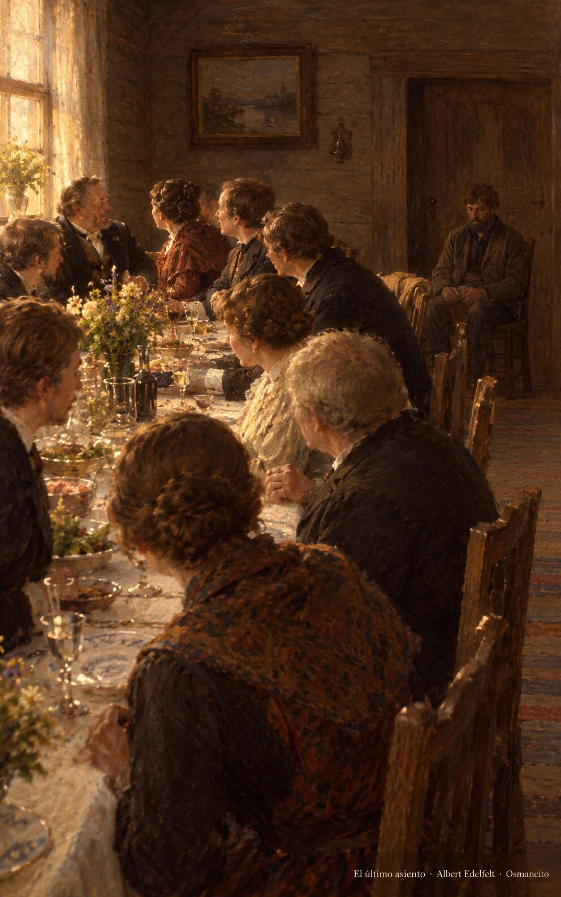
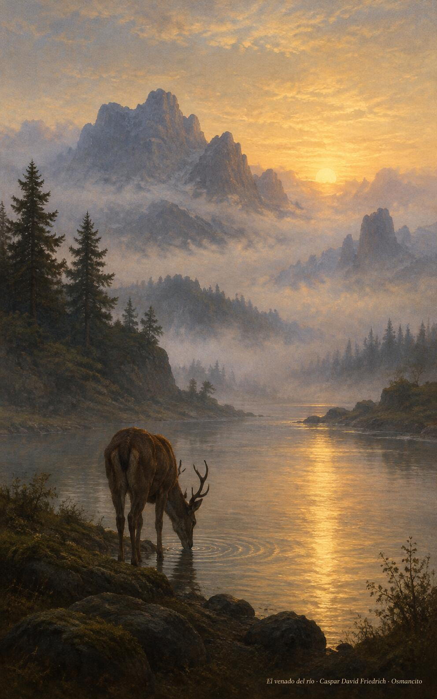

31 de octubre de 2026
¡Buenos días!
El último lugar
21
Mi alma te busca a ti, Dios mío.
Salmo 41,3. Fuente
Que busquemos el agua viva como el venado busca el río, con el alma sedienta de lo único que sacia. Que escojamos el último lugar de la mesa y dejemos que sea otro quien nos acerque a la cabecera. Que la vida se nos vuelva servicio y la muerte ganancia, y que nada nos engrandezca tanto como agacharnos a levantar a quien viene detrás de nosotros, con la frente baja y el corazón alto, siempre.

- Los convidados disputan los primeros puestos y el hombre sencillo se sienta al fondo, junto a la puerta: Lucas 14, el último lugar espera a quien lo escoge.

- El venado bebe en el río al alba, frente a las montañas envueltas en niebla: Salmo 41, el alma que busca el agua viva.
¡Feliz sábado 31 de octubre!
😊🙋♂
© 2026 Osmancito